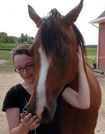

A little about me
Hello, my name is Alyssa Gibson and I am a web developer and programmer/analyst. I am dedicated to producing an excellent user experience with my work by using best practices and showing great attention to detail. In my free time I enjoy learning new programming languages, riding my horse Misha and reading.